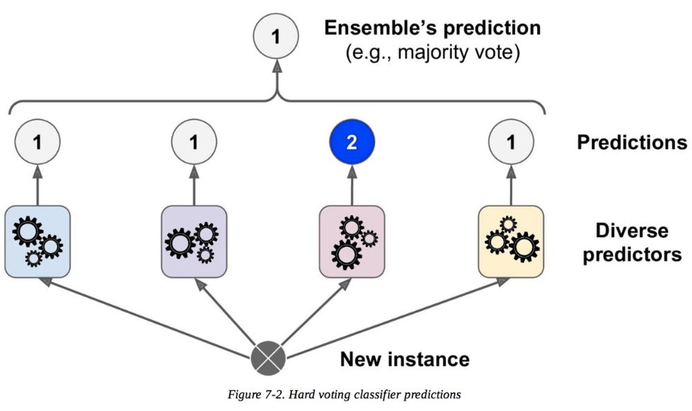
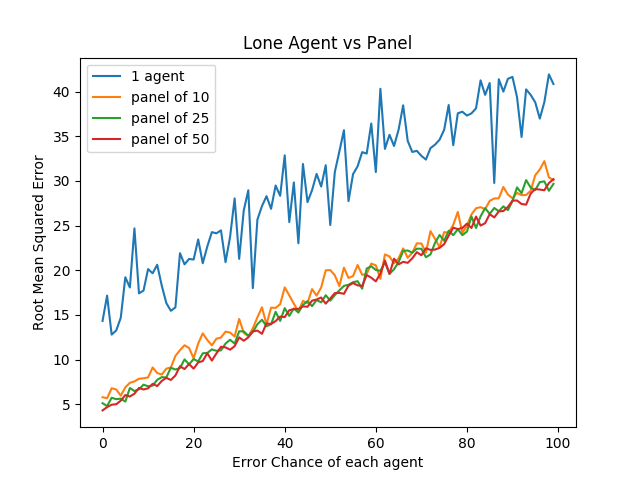
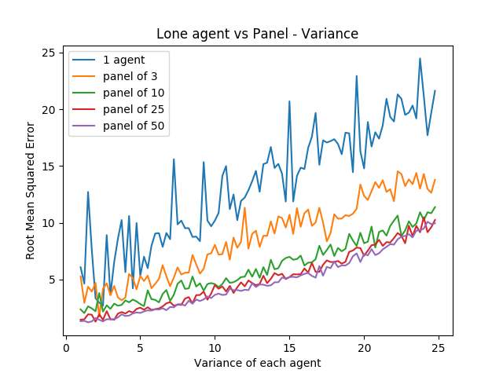
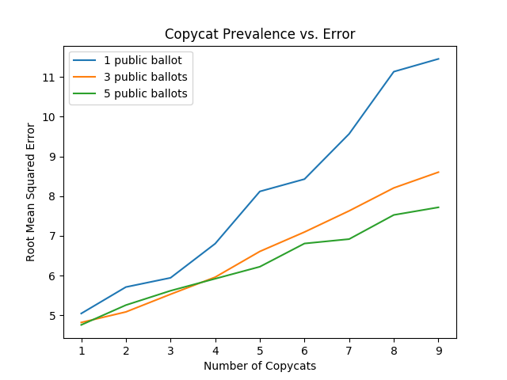
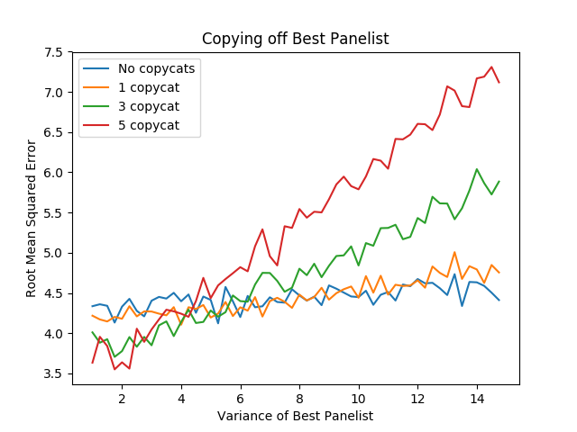
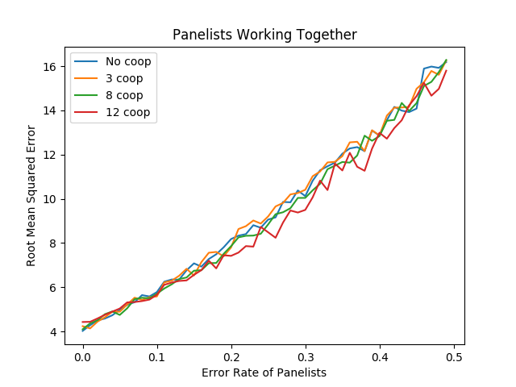
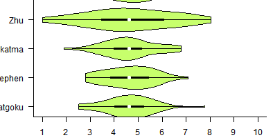

Invasion of the Ballot Snatchers
Table of Contents
Invasion of the Ballot Snatchers (and Other Stories) - Decorrelated Errors in Panel-Based Rank Voting
Abstract
Some theoretical justification for panel-based voting are empirically explored. Some strengths and possible harms in such a system are considered, and simulation experiments are run to see the degree to which they can contribute to harming or helping the list. In addition to demonstrating the advantages of having votes from multiple agents, we demonstrate that copying the output of another agent harms performance even if that agent is significantly better than the other agents.
Introduction
Every year, Super Smash Brothers Melee players come together to rank the top 100 players based on results from tournaments all over the world1. Every year, dozens of hand-selected volunteer panelists spend upwards of 30 hours considering the wins and losses of every eligible player, painstakingly crafting lists which they believe accurately reflect the 100 best active players. And, as you might expect, every year, hordes of fans parrot the same handful of talking points about what they believe those panelists are doing wrong.
The misconceptions surrounding the annual rankings are a topic I talk about at length frequently, and a topic which other panelists have talked about many times. However, the one misconception that never seems to go away is the idea that "the ranking system" behaves in a specific way, as a unit, and "the way ranking works" is some way or another. These claims, which usually range from blatantly false to frustratingly misinformed, almost always miss the nuance that the panel system is comprised of many independent people, with many different opinions about what criteria should be used to rank players.
My hope for this post is that it can clarify, clearly, that the "panel system" doesn't behave in one nebulous blob together, and that claims that "the ranking system" values something or another "too highly" or "not highly enough" are misinformed. In fact, the entire point of panel-based rank voting is that the agents in the panel have to arrive at their lists using processes as different as possible in order to achieve the best performance. Contrarily, what harms performance in these situations is when too many of panelists happen to make the exact same mistakes, and the frustration directed at panelists would be better levied at panelists who act in ways which can cause this to happen more often.
This is all easy to demonstrate with some very simple programs, and a little bit of insight from the statistics and machine learning literature.
Ensembles
Ensemble methods are a class of machine learning techniques that use multiple algorithms working together in order to achieve better predictive performance than using any algorithm by itself. There are many types of ensemble methods, and using them to boost performance is very common in scenarios like data science competitions2.
3
In a role-reversal of cliche, I will be using anecdotes from the ensemble literature to describe human performance. Armed with this knowledge, let's see if we can learn some things about how groups of agents can uncover the best possible list in a ranked-ordering task.
Why Have a Panel?
The fundamental intuition behind choosing an ensemble over a single agent is the idea that an ensemble allows the agents to "cover for" the mistakes of their peers. If you're the only agent and you make a mistake, your mistake is put into practice. If you're one agent out of ten agents and you make a mistake, then as long as that mistake isn't also made by all of the other agents, you will probably correct the mistake and the correct decision gets put into practice.
To explain this, we can think about two very simple tasks: the Return 10 task, and the Seeded Return 10 task.
Return 10 Task
We begin with a super simple task - given the ability to generate a random number normally distributed around any number with some fixed variance, return the closest number to 10 you can. Obviously, the best tactic for this would be to center your normal distribution around the number 10, since by definition data near the mean of the normal distribution are more likely to occur.
import numpy as np number_selection = 10 variance = 2.5 #Single agent selects number close to ten def single_agent(selection): single_agent = np.random.normal(selection, variance) single_error = np.abs(number_selection - single_agent) return single_error #panel of agents select a number close to ten, which is averaged def panel(selection): number_of_panelists = 5 panel_votes = [np.random.normal(selection, variance) for _ in range(number_of_panelists)] panel_decision = np.mean(panel_votes) panel_error = np.abs(number_selection - panel_decision) return panel_error #get some info about these errors single_attempts = [single_agent(10) for _ in range(100)] panel_attempts = [panel(10) for _ in range(100)] single_info = [np.mean(single_attempts), np.std(single_attempts), max(single_attempts), min(single_attempts)] panel_info = [np.mean(panel_attempts), np.std(panel_attempts), max(panel_attempts), min(panel_attempts)] return [single_info, panel_info]
| 1.7972504544531396 | 1.5322129946973109 | 6.7988449259293935 | 0.03550172936625451 |
| 0.8653320003692471 | 0.6319248291526629 | 2.766182868187526 | 0.02592768837883419 |
If you have a single agent, with a single try at this task, your results will be sort of all over the place. Sometimes you'll land right on top of 10, and have very low error (here measured just as absolute value of the difference between the two numbers). Other times, you'll pick a number far from 10, and have very high error.
If you instead have a "panel" of five agents who all get one try at this task, and then average the outputs of each of these agents together, the performance is much better even with only a couple of agents. The intuition behind this makes a lot of sense: you are most likely to land close to 10, so even if you have one or two agents get unlucky bad rolls then the agents who got better rolls pull their collective result closer to 10. This is the common theme with ensemble methods - since your agents can cover for each others' mistakes, you can get good performance without all of your agents having to be perfect all the time.
Decorrelated Errors
Critically, ensembles only help you when your agents largely make mistakes which are not shared between them. This is what we will be referring to as "decorrelated errors" or "uncorrelated errors"4. Again, this intuition is pretty straightforward: if all of your agents make the same mistakes, none of them can cover for the others' mistakes.
In our previous example, we showed that you could reduce the variance of this "return 10" task by running it multiple times and averaging the results together. But now we consider a version of this task where this approach will not work: the "seeded return 10 task":
Seeded Return 10 Task
The seeded return 10 task is a lot like the return 10 task, but with a twist - the random number you pick is always the same if you decide to center it around that number. In python, it looks like this:
import numpy as np number_selection = 10 variance = 2.5 np.random.seed(int(number_selection * 1000)) return np.random.normal(number_selection, variance)
6.82227340048
If you run this a million times, you will always return the same random value. The most rational decision for any single agent in this example is to select 10 in order to return the closest number to 10, but if you have 100 agents averaged together for this task they always select the same value. This is a critical point to build intuition about ensembles: if you have ten agents that all behave in the same way, you don't have ten agents, you have one agent ten times.
import numpy as np number_selection = 10 variance = 2.5 #Single agent selects number close to ten def single_agent(selection): np.random.seed(int(selection * 1000)) agent = np.random.normal(selection, variance) return agent #panel of agents select a number close to ten, which is averaged def panel(selection): panelists = [9, 9.5, 10, 10.5, 11] #panelists = [8, 9, 10, 11, 12] panel_votes = [single_agent(x) for x in panelists] panel_decision = np.mean(panel_votes) return panel_decision def evaluate(decision): return np.abs(number_selection - decision) #get some info about these errors single_attempts = [evaluate(single_agent(10)) for _ in range(100)] panel_attempts = [evaluate(panel(10)) for _ in range(100)] single_info = [np.mean(single_attempts), np.std(single_attempts), max(single_attempts), min(single_attempts)] panel_info = [np.mean(panel_attempts), np.std(panel_attempts), max(panel_attempts), min(panel_attempts)] return [single_info, panel_info]
| 3.1777265995156982 | 8.881784197001252e-16 | 3.1777265995156974 | 3.1777265995156974 |
| 0.32457601896086347 | 5.551115123125783e-17 | 0.3245760189608635 | 0.3245760189608635 |
For this task, you actually perform better on average if every agent picks a random number centered around a random number close to 10. That is to say, if every agent does something strictly worse than the optimal choice, as an aggregate they still have a lower error than any agent by itself.
The big takeaway here is that you don't get any added value adding more agents if they all just make the same mistakes, and you do get added value adding agents with diverse decisionmaking processes, even if those agents are "worse". You'll see this intuition all over the place, in many fields well outside of machine learning - making sure all of the agents working on a task are unlikely to make the same errors is often more important than making sure each individual agent is as good as possible. This is partially why, for example, highly intellectually diverse workplaces tend to outperform workplaces which only hire people within a narrow specialization, especially in the sciences5, 6.
Ranking Simulation Toy Experiments
To more directly examine panel-based rank voting tasks, let's devise a toy version of this task where the objective is to return a list of "ranked players" [1, 2, 3, …, 100] as closely as possible, with distance to the list measured by Root Mean Squared Error.
\[RMSE = \sqrt{\frac{1}{n} \sum_{i=1}^{n} (Y_i - \hat{Y}_i)^2}\]
Each agent in this task is pretty competent – On average, the mean value of the 10th player is centered around 10, the mean value of the 50th player is centered around 50, etc. However, there is some degree of uncertainty for each agent, and sometimes the placement of a player is off by a handful of spots. On top of this, the variance between each agent's vote is heteroscedastic7, which just means that the variability is different for each point, since usually ranking the lower end of the list is noisier than ranking the top8. On top of this, each agent has some small percentage chance to completely mess up one of the indices; they have a 3-5% chance to rank someone almost completely randomly (let's say from 20 to 100). In python, it looks like this:
import numpy as np import random import matplotlib import matplotlib.pyplot as plt from random import sample matplotlib.use('Agg') ground_truth = list(range(1,101)) def calculate_error(y, y_hat): return np.sqrt(np.mean([(a - b)**2 for a,b in zip(y, y_hat)])) def single_agent(variance, error_chance): ballot = [] for player in range(1,101): playernoise = variance * (player / 50.0) if random.random() < error_chance: bounds = np.random.uniform(20,100) ballot.append(np.random.normal(bounds, playernoise)) else: ballot.append(np.random.normal(player, playernoise)) return np.argsort(ballot)+1 def panel(panel_size, variance, errorchance): ballots = [] for agent in range(panel_size): panelist = single_agent(variance, errorchance) ballots.append(panelist) return ballots def vote(ballots): return np.argsort(np.mean(ballots, axis=0))+1
import numpy as np import random import matplotlib import matplotlib.pyplot as plt from random import sample matplotlib.use('Agg') ground_truth = list(range(1,101)) def calculate_error(y, y_hat): return np.sqrt(np.mean([(a - b)**2 for a,b in zip(y, y_hat)])) def single_agent(variance, error_chance): ballot = [] for player in range(1,101): playernoise = variance * (player / 50.0) if random.random() < error_chance: bounds = np.random.uniform(20,100) ballot.append(np.random.normal(bounds, playernoise)) else: ballot.append(np.random.normal(player, playernoise)) return np.argsort(ballot)+1 def panel(panel_size, variance, errorchance): ballots = [] for agent in range(panel_size): panelist = single_agent(variance, errorchance) ballots.append(panelist) return ballots def vote(ballots): return np.argsort(np.mean(ballots, axis=0))+1 return single_agent(15, .03)
| 2 | 1 | 3 | 4 | 5 | 6 | 8 | 7 | 9 | 14 | 19 | 10 | 13 | 17 | 12 | 11 | 16 | 28 | 15 | 21 | 31 | 25 | 29 | 34 | 24 | 40 | 27 | 20 | 18 | 26 | … |
import numpy as np import random import matplotlib import matplotlib.pyplot as plt from random import sample matplotlib.use('Agg') ground_truth = list(range(1,101)) def calculate_error(y, y_hat): return np.sqrt(np.mean([(a - b)**2 for a,b in zip(y, y_hat)])) def single_agent(variance, error_chance): ballot = [] for player in range(1,101): playernoise = variance * (player / 50.0) if random.random() < error_chance: bounds = np.random.uniform(20,100) ballot.append(np.random.normal(bounds, playernoise)) else: ballot.append(np.random.normal(player, playernoise)) return np.argsort(ballot)+1 def panel(panel_size, variance, errorchance): ballots = [] for agent in range(panel_size): panelist = single_agent(variance, errorchance) ballots.append(panelist) return ballots def vote(ballots): return np.argsort(np.mean(ballots, axis=0))+1 #return calculate_error(ground_truth, single_agent(15, .03)) return calculate_error(ground_truth, vote(panel(10,15,.03)))
5.414794548272353
With this paradigm, we can begin to explore some fundamental questions about panel-based ranking systems.
Lone Wolf vs Panel
We begin by exploring whether a panel is worth using at all, compared to just using one "good" agent.
We look at the average mean squared error of solo agents vs a panel of agents, relative to the number of mistakes each agent has. We have four trials – solo agent, panel of 10, panel of 25, and panel of 50.
import numpy as np import random import matplotlib import matplotlib.pyplot as plt from random import sample matplotlib.use('Agg') ground_truth = list(range(1,101)) def calculate_error(y, y_hat): return np.sqrt(np.mean([(a - b)**2 for a,b in zip(y, y_hat)])) def single_agent(variance, error_chance): ballot = [] for player in range(1,101): playernoise = variance * (player / 50.0) if random.random() < error_chance: bounds = np.random.uniform(20,100) ballot.append(np.random.normal(bounds, playernoise)) else: ballot.append(np.random.normal(player, playernoise)) return np.argsort(ballot)+1 def panel(panel_size, variance, errorchance): ballots = [] for agent in range(panel_size): panelist = single_agent(variance, errorchance) ballots.append(panelist) return ballots def vote(ballots): return np.argsort(np.mean(ballots, axis=0))+1 agent_1 = [] agent_10 = [] agent_25 = [] agent_50 = [] error_rates = np.arange(0,1,.01) for x in error_rates: agent_1.append(calculate_error(ground_truth, single_agent(15, x))) agent_10.append(calculate_error(ground_truth, np.mean(panel(10, 15, x), axis=0))) agent_25.append(calculate_error(ground_truth, np.mean(panel(25, 15, x), axis=0))) agent_50.append(calculate_error(ground_truth, np.mean(panel(50, 15, x), axis=0))) plt.plot(agent_1, label="1 agent") plt.plot(agent_10, label="panel of 10") plt.plot(agent_25, label="panel of 25") plt.plot(agent_50, label="panel of 50") plt.title("Lone Agent vs Panel") plt.xlabel("Error Chance of each agent") plt.ylabel("Root Mean Squared Error") plt.legend() plt.savefig('../images/ensembles/lonewolf.png') return '../images/ensembles/lonewolf.png'

Here we begin to see just how much less wiggle room is afforded to the single agent compared to the panel of agents. The use of a panel corrects for natural variance for each player so much that a single agent with 0% error chance is roughly comparable here to a panel full of agents who commit humongous errors 30% of the time.
Random error is one thing, but the noise level between panelists also has an interesting property when comparing single agents against a panel of agents.
import numpy as np import random import matplotlib import matplotlib.pyplot as plt from random import sample matplotlib.use('Agg') ground_truth = list(range(1,101)) def calculate_error(y, y_hat): return np.sqrt(np.mean([(a - b)**2 for a,b in zip(y, y_hat)])) def single_agent(variance, error_chance): ballot = [] for player in range(1,101): playernoise = variance * (player / 50.0) if random.random() < error_chance: bounds = np.random.uniform(20,100) ballot.append(np.random.normal(bounds, playernoise)) else: ballot.append(np.random.normal(player, playernoise)) return np.argsort(ballot)+1 def panel(panel_size, variance, errorchance): ballots = [] for agent in range(panel_size): panelist = single_agent(variance, errorchance) ballots.append(panelist) return ballots def vote(ballots): return np.argsort(np.mean(ballots, axis=0))+1 agent_1 = [] agent_3 = [] agent_10 = [] agent_25 = [] agent_50 = [] variance_rates = np.arange(1,25,.25) for x in variance_rates: agent_1.append(calculate_error(ground_truth, single_agent(x, .03))) agent_3.append(calculate_error(ground_truth, np.mean(panel(3, x, .03), axis=0))) agent_10.append(calculate_error(ground_truth, np.mean(panel(10, x, .03), axis=0))) agent_25.append(calculate_error(ground_truth, np.mean(panel(25, x, .03), axis=0))) agent_50.append(calculate_error(ground_truth, np.mean(panel(50, x, .03), axis=0))) plt.plot(variance_rates, agent_1, label="1 agent") plt.plot(variance_rates, agent_3, label="panel of 3") plt.plot(variance_rates, agent_10, label="panel of 10") plt.plot(variance_rates, agent_25, label="panel of 25") plt.plot(variance_rates, agent_50, label="panel of 50") plt.title("Lone agent vs Panel - Variance") plt.xlabel("Variance of each agent") plt.ylabel("Root Mean Squared Error") plt.legend() plt.savefig('../images/ensembles/lonewolf_var.png') return '../images/ensembles/lonewolf_var.png'

From this we can start to somewhat see the effect that the heteroscedasticity has on this task, and highlights one of the big benefits of an ensemble for a task like this: as the variance of each agent increases, the error increases more quickly the fewer agents there are.
There are two ways to think about this:
- Given a fixed noise level for a task (i.e. inherent ambiguity of measurement), you do better with more panelists, and this distinction is more important the noisier the task is.
- Given the choice between a single agent with modestly low variance and many agents with comparatively higher variances, you perform better with the latter provided that the panelists make independent decisions
Copycats
One way the errors of agents could become correlated would be if the agents could see one of the agents' ballots, and could choose to copy that "public agent" with some probability. As we saw earlier with the seeded return 10 experiment, this effectively turns those two agents into one agent with double the weight of other panelists.
import numpy as np import random import matplotlib import matplotlib.pyplot as plt from random import sample matplotlib.use('Agg') ground_truth = list(range(1,101)) def calculate_error(y, y_hat): return np.sqrt(np.mean([(a - b)**2 for a,b in zip(y, y_hat)])) def single_agent(variance, error_chance): ballot = [] for player in range(1,101): playernoise = variance * (player / 50.0) if random.random() < error_chance: bounds = np.random.uniform(20,100) ballot.append(np.random.normal(bounds, playernoise)) else: ballot.append(np.random.normal(player, playernoise)) return np.argsort(ballot)+1 def panel(panel_size, variance, errorchance): ballots = [] for agent in range(panel_size): panelist = single_agent(variance, errorchance) ballots.append(panelist) return ballots def vote(ballots): return np.argsort(np.mean(ballots, axis=0))+1 def compromised_panel(publics, copycats, panel_size, variance, errorchance, public_var=None, public_err=None): if publics+copycats > panel_size: raise ValueError("Panel size must be greater than number of public and copycat agents") public_agents = [] copycat_agents = [] for i in range(publics): if public_var == None and public_err == None: public_agents.append(single_agent(variance, errorchance)) else: public_agents.append(single_agent(public_var, public_err)) for j in range(copycats): copycat_agents.append(sample(public_agents, 1)[0]) if len(copycat_agents) is 0: ballots = public_agents else: ballots = list(np.concatenate((public_agents, copycat_agents))) for x in range(panel_size - len(ballots)): ballots.append(single_agent(variance, errorchance)) return ballots
import numpy as np import random import matplotlib import matplotlib.pyplot as plt from random import sample matplotlib.use('Agg') ground_truth = list(range(1,101)) def calculate_error(y, y_hat): return np.sqrt(np.mean([(a - b)**2 for a,b in zip(y, y_hat)])) def single_agent(variance, error_chance): ballot = [] for player in range(1,101): playernoise = variance * (player / 50.0) if random.random() < error_chance: bounds = np.random.uniform(20,100) ballot.append(np.random.normal(bounds, playernoise)) else: ballot.append(np.random.normal(player, playernoise)) return np.argsort(ballot)+1 def panel(panel_size, variance, errorchance): ballots = [] for agent in range(panel_size): panelist = single_agent(variance, errorchance) ballots.append(panelist) return ballots def vote(ballots): return np.argsort(np.mean(ballots, axis=0))+1 def compromised_panel(publics, copycats, panel_size, variance, errorchance, public_var=None, public_err=None): if publics+copycats > panel_size: raise ValueError("Panel size must be greater than number of public and copycat agents") public_agents = [] copycat_agents = [] for i in range(publics): if public_var == None and public_err == None: public_agents.append(single_agent(variance, errorchance)) else: public_agents.append(single_agent(public_var, public_err)) for j in range(copycats): copycat_agents.append(sample(public_agents, 1)[0]) if len(copycat_agents) is 0: ballots = public_agents else: ballots = list(np.concatenate((public_agents, copycat_agents))) for x in range(panel_size - len(ballots)): ballots.append(single_agent(variance, errorchance)) return ballots return calculate_error(ground_truth, vote(compromised_panel(0,0,10,15,.03)))
5.582114294781145
Copying Random Agent's List
Let's start by assuming that the agents being copied can be any random agent. We will explore the relationship between copycat agents, public agents, and error on the list.
import numpy as np import random import matplotlib import matplotlib.pyplot as plt from random import sample matplotlib.use('Agg') ground_truth = list(range(1,101)) def calculate_error(y, y_hat): return np.sqrt(np.mean([(a - b)**2 for a,b in zip(y, y_hat)])) def single_agent(variance, error_chance): ballot = [] for player in range(1,101): playernoise = variance * (player / 50.0) if random.random() < error_chance: bounds = np.random.uniform(20,100) ballot.append(np.random.normal(bounds, playernoise)) else: ballot.append(np.random.normal(player, playernoise)) return np.argsort(ballot)+1 def panel(panel_size, variance, errorchance): ballots = [] for agent in range(panel_size): panelist = single_agent(variance, errorchance) ballots.append(panelist) return ballots def vote(ballots): return np.argsort(np.mean(ballots, axis=0))+1 def compromised_panel(publics, copycats, panel_size, variance, errorchance, public_var=None, public_err=None): if publics+copycats > panel_size: raise ValueError("Panel size must be greater than number of public and copycat agents") public_agents = [] copycat_agents = [] for i in range(publics): if public_var == None and public_err == None: public_agents.append(single_agent(variance, errorchance)) else: public_agents.append(single_agent(public_var, public_err)) for j in range(copycats): copycat_agents.append(sample(public_agents, 1)[0]) if len(copycat_agents) is 0: ballots = public_agents else: ballots = list(np.concatenate((public_agents, copycat_agents))) for x in range(panel_size - len(ballots)): ballots.append(single_agent(variance, errorchance)) return ballots copycat_rates = list(range(1,10)) public_1 = [] public_3 = [] public_5 = [] # many measurements to reduce noise for _ in range(20): public_1_ = [] public_3_ = [] public_5_ = [] for x in copycat_rates: public_1_.append(calculate_error(ground_truth, vote(compromised_panel(1, x, 15, 15, .03)))) public_3_.append(calculate_error(ground_truth, vote(compromised_panel(3, x, 15, 15, .03)))) public_5_.append(calculate_error(ground_truth, vote(compromised_panel(5, x, 15, 15, .03)))) public_1.append(public_1_) public_3.append(public_3_) public_5.append(public_5_) public_1 = np.mean(public_1, axis=0) public_3 = np.mean(public_3, axis=0) public_5 = np.mean(public_5, axis=0) plt.plot(copycat_rates, public_1, label="1 public ballot") plt.plot(copycat_rates, public_3, label="3 public ballots") plt.plot(copycat_rates, public_5, label="5 public ballots") plt.title("Copycat Prevalence vs. Error") plt.xlabel("Number of Copycats") plt.ylabel("Root Mean Squared Error") plt.legend() plt.savefig('../images/ensembles/copycat_var.png') return '../images/ensembles/copycat_var.png'

Unsurprisingly, we can see that the more agents copy other ballots, the worse the list gets. This problem is dampened by more agents being public, since the panel is then slightly less likely to vastly overweight a single agent's predictions, but it's mostly just a band-aid; copycat agents strictly harm the list regardless of how many agents have lists they can copy.
Copying Unusually Good Agent's List
You might think that it would be okay to copy off an agent if their list is better than the average panelist. There are two competing ideas here: it could be possible that duplicating a good agent might help more than correlating the agents would harm, but it may also be possible that overweighing the "best" panelist could serve as a sort of dynamic ensemble selection 9 wherein you learn to select the prediction from the agent which seems the most competent at any given point10.
import numpy as np import random import matplotlib import matplotlib.pyplot as plt from random import sample matplotlib.use('Agg') ground_truth = list(range(1,101)) def calculate_error(y, y_hat): return np.sqrt(np.mean([(a - b)**2 for a,b in zip(y, y_hat)])) def single_agent(variance, error_chance): ballot = [] for player in range(1,101): playernoise = variance * (player / 50.0) if random.random() < error_chance: bounds = np.random.uniform(20,100) ballot.append(np.random.normal(bounds, playernoise)) else: ballot.append(np.random.normal(player, playernoise)) return np.argsort(ballot)+1 def panel(panel_size, variance, errorchance): ballots = [] for agent in range(panel_size): panelist = single_agent(variance, errorchance) ballots.append(panelist) return ballots def vote(ballots): return np.argsort(np.mean(ballots, axis=0))+1 def compromised_panel(publics, copycats, panel_size, variance, errorchance, public_var=None, public_err=None): if publics+copycats > panel_size: raise ValueError("Panel size must be greater than number of public and copycat agents") public_agents = [] copycat_agents = [] for i in range(publics): if public_var == None and public_err == None: public_agents.append(single_agent(variance, errorchance)) else: public_agents.append(single_agent(public_var, public_err)) for j in range(copycats): copycat_agents.append(sample(public_agents, 1)[0]) if len(copycat_agents) is 0: ballots = public_agents else: ballots = list(np.concatenate((public_agents, copycat_agents))) for x in range(panel_size - len(ballots)): ballots.append(single_agent(variance, errorchance)) return ballots copy_0 = [] copy_1 = [] copy_3 = [] copy_5 = [] variance_rates = np.arange(1,15,.25) # many measurements to reduce noise for _ in range(20): copy_0_ = [] copy_1_ = [] copy_3_ = [] copy_5_ = [] for x in variance_rates: copy_0_.append(calculate_error(ground_truth, vote(compromised_panel(1, 0, 15, 15, .03, x, .01)))) copy_1_.append(calculate_error(ground_truth, vote(compromised_panel(1, 1, 15, 15, .03, x, .01)))) copy_3_.append(calculate_error(ground_truth, vote(compromised_panel(1, 3, 15, 15, .03, x, .01)))) copy_5_.append(calculate_error(ground_truth, vote(compromised_panel(1, 5, 15, 15, .03, x, .01)))) copy_0.append(copy_0_) copy_1.append(copy_1_) copy_3.append(copy_3_) copy_5.append(copy_5_) copy_0 = np.mean(copy_0, axis=0) copy_1 = np.mean(copy_1, axis=0) copy_3 = np.mean(copy_3, axis=0) copy_5 = np.mean(copy_5, axis=0) plt.plot(variance_rates, copy_0, label="No copycats") plt.plot(variance_rates, copy_1, label="1 copycat") plt.plot(variance_rates, copy_3, label="3 copycat") plt.plot(variance_rates, copy_5, label="5 copycat") plt.title("Copying off Best Panelist") plt.xlabel("Variance of Best Panelist") plt.ylabel("Root Mean Squared Error") plt.legend() plt.savefig('../images/ensembles/copy_good.png') return '../images/ensembles/copy_good.png'

Here we can examine the tradeoff. In this example, all of the panelists have a variance of 15, and the value of the X axis represents the variance of the agent the copycats are copying off of. You can see here if the copied agent isn't much better than the regular agents, then the tradeoff is very much not worth it – copying off of them makes the list substantially worse. The point at which overweighing the best panelist eclipses not doing so happens when that panelist has a variance of about 5, i.e. roughly three times more precise than the average panelist.
Collaboration
One thing conceptually similar to copying is "collaboration" between agents, particularly in larger groups. The distinction here is akin to a student copying homework, versus students gathering to work on homework together. While this process is less one-way than copying, it's worth exploring whether this detrimentally decorrelates the errors between agents more than it helps, since these do typically end up making all of the agents' lists more similar to each other.
We'll model this by putting a group of agents together, and then having them each have some chance to reroll around the median value for each rank among the votes, proportional to how far away that vote is to theirs. We're loosely trying to emulate the agents looking at their lists and seeing if any have any very abnormal placements, correcting errors and reducing variance at the expense of some mean drift and increasing the similarity between lists.
import numpy as np import random import matplotlib import matplotlib.pyplot as plt from random import sample matplotlib.use('Agg') ground_truth = list(range(1,101)) def calculate_error(y, y_hat): return np.sqrt(np.mean([(a - b)**2 for a,b in zip(y, y_hat)])) def single_agent(variance, error_chance): ballot = [] for player in range(1,101): playernoise = variance * (player / 50.0) if random.random() < error_chance: bounds = np.random.uniform(20,100) ballot.append(np.random.normal(bounds, playernoise)) else: ballot.append(np.random.normal(player, playernoise)) return np.argsort(ballot)+1 def panel(panel_size, variance, errorchance): ballots = [] for agent in range(panel_size): panelist = single_agent(variance, errorchance) ballots.append(panelist) return ballots def vote(ballots): return np.argsort(np.mean(ballots, axis=0))+1 def compromised_panel(publics, copycats, panel_size, variance, errorchance, public_var=None, public_err=None): if publics+copycats > panel_size: raise ValueError("Panel size must be greater than number of public and copycat agents") public_agents = [] copycat_agents = [] for i in range(publics): if public_var == None and public_err == None: public_agents.append(single_agent(variance, errorchance)) else: public_agents.append(single_agent(public_var, public_err)) for j in range(copycats): copycat_agents.append(sample(public_agents, 1)[0]) if len(copycat_agents) is 0: ballots = public_agents else: ballots = list(np.concatenate((public_agents, copycat_agents))) for x in range(panel_size - len(ballots)): ballots.append(single_agent(variance, errorchance)) return ballots def cooperative_panel(coop_size, panel_size, variance, errorchance): if coop_size > panel_size: raise ValueError("Panel size must be greater than number of public and copycat agents") ballots = [] # cooperative agents for i in range(coop_size): ballots.append(single_agent(variance, errorchance)) for x in range(len(ballots[0])): med_vote = np.median(np.array(ballots)[:,x]) for voter in ballots: oops = np.abs(med_vote - voter[x]) / 100 if random.random() < oops: voter[x] = np.random.normal(med_vote, variance) # other agents for x in range(panel_size - len(ballots)): ballots.append(single_agent(variance, errorchance)) return ballots
import numpy as np import random import matplotlib import matplotlib.pyplot as plt from random import sample matplotlib.use('Agg') ground_truth = list(range(1,101)) def calculate_error(y, y_hat): return np.sqrt(np.mean([(a - b)**2 for a,b in zip(y, y_hat)])) def single_agent(variance, error_chance): ballot = [] for player in range(1,101): playernoise = variance * (player / 50.0) if random.random() < error_chance: bounds = np.random.uniform(20,100) ballot.append(np.random.normal(bounds, playernoise)) else: ballot.append(np.random.normal(player, playernoise)) return np.argsort(ballot)+1 def panel(panel_size, variance, errorchance): ballots = [] for agent in range(panel_size): panelist = single_agent(variance, errorchance) ballots.append(panelist) return ballots def vote(ballots): return np.argsort(np.mean(ballots, axis=0))+1 def compromised_panel(publics, copycats, panel_size, variance, errorchance, public_var=None, public_err=None): if publics+copycats > panel_size: raise ValueError("Panel size must be greater than number of public and copycat agents") public_agents = [] copycat_agents = [] for i in range(publics): if public_var == None and public_err == None: public_agents.append(single_agent(variance, errorchance)) else: public_agents.append(single_agent(public_var, public_err)) for j in range(copycats): copycat_agents.append(sample(public_agents, 1)[0]) if len(copycat_agents) is 0: ballots = public_agents else: ballots = list(np.concatenate((public_agents, copycat_agents))) for x in range(panel_size - len(ballots)): ballots.append(single_agent(variance, errorchance)) return ballots def cooperative_panel(coop_size, panel_size, variance, errorchance): if coop_size > panel_size: raise ValueError("Panel size must be greater than number of public and copycat agents") ballots = [] # cooperative agents for i in range(coop_size): ballots.append(single_agent(variance, errorchance)) for x in range(len(ballots[0])): med_vote = np.median(np.array(ballots)[:,x]) for voter in ballots: oops = np.abs(med_vote - voter[x]) / 100 if random.random() < oops: voter[x] = np.random.normal(med_vote, variance) # other agents for x in range(panel_size - len(ballots)): ballots.append(single_agent(variance, errorchance)) return ballots return calculate_error(ground_truth, vote(cooperative_panel(3,10,15,.03)))
4.843552415324934
import numpy as np import random import matplotlib import matplotlib.pyplot as plt from random import sample matplotlib.use('Agg') ground_truth = list(range(1,101)) def calculate_error(y, y_hat): return np.sqrt(np.mean([(a - b)**2 for a,b in zip(y, y_hat)])) def single_agent(variance, error_chance): ballot = [] for player in range(1,101): playernoise = variance * (player / 50.0) if random.random() < error_chance: bounds = np.random.uniform(20,100) ballot.append(np.random.normal(bounds, playernoise)) else: ballot.append(np.random.normal(player, playernoise)) return np.argsort(ballot)+1 def panel(panel_size, variance, errorchance): ballots = [] for agent in range(panel_size): panelist = single_agent(variance, errorchance) ballots.append(panelist) return ballots def vote(ballots): return np.argsort(np.mean(ballots, axis=0))+1 def compromised_panel(publics, copycats, panel_size, variance, errorchance, public_var=None, public_err=None): if publics+copycats > panel_size: raise ValueError("Panel size must be greater than number of public and copycat agents") public_agents = [] copycat_agents = [] for i in range(publics): if public_var == None and public_err == None: public_agents.append(single_agent(variance, errorchance)) else: public_agents.append(single_agent(public_var, public_err)) for j in range(copycats): copycat_agents.append(sample(public_agents, 1)[0]) if len(copycat_agents) is 0: ballots = public_agents else: ballots = list(np.concatenate((public_agents, copycat_agents))) for x in range(panel_size - len(ballots)): ballots.append(single_agent(variance, errorchance)) return ballots def cooperative_panel(coop_size, panel_size, variance, errorchance): if coop_size > panel_size: raise ValueError("Panel size must be greater than number of public and copycat agents") ballots = [] # cooperative agents for i in range(coop_size): ballots.append(single_agent(variance, errorchance)) for x in range(len(ballots[0])): med_vote = np.median(np.array(ballots)[:,x]) for voter in ballots: oops = np.abs(med_vote - voter[x]) / 100 if random.random() < oops: voter[x] = np.random.normal(med_vote, variance) # other agents for x in range(panel_size - len(ballots)): ballots.append(single_agent(variance, errorchance)) return ballots coop_0 = [] coop_3 = [] coop_8 = [] coop_12 = [] error_rates = np.arange(0,.5,.01) # many measurements to reduce noise for _ in range(20): coop_0_ = [] coop_3_ = [] coop_8_ = [] coop_12_ = [] for x in error_rates: coop_0_.append(calculate_error(ground_truth, vote(panel(15, 15, x)))) coop_3_.append(calculate_error(ground_truth, vote(cooperative_panel(3, 15, 15, x)))) coop_8_.append(calculate_error(ground_truth, vote(cooperative_panel(8, 15, 15, x)))) coop_12_.append(calculate_error(ground_truth, vote(cooperative_panel(12, 15, 15, x)))) coop_0.append(coop_0_) coop_3.append(coop_3_) coop_8.append(coop_8_) coop_12.append(coop_12_) coop_0 = np.mean(coop_0, axis=0) coop_3 = np.mean(coop_3, axis=0) coop_8 = np.mean(coop_8, axis=0) coop_12 = np.mean(coop_12, axis=0) plt.plot(error_rates, coop_0, label="No coop") plt.plot(error_rates, coop_3, label="3 coop") plt.plot(error_rates, coop_8, label="8 coop") plt.plot(error_rates, coop_12, label="12 coop") plt.title("Panelists Working Together") plt.xlabel("Error Rate of Panelists") plt.ylabel("Root Mean Squared Error") plt.legend() plt.savefig('../images/ensembles/work_together.png') return '../images/ensembles/work_together.png'

This ultimately doesn't do that much to the list. There's an almost unnoticeable reduction in error associated with higher error rates, and the average error of each agent in the panel is lower as a result of the corrected blunders as seen below…
import numpy as np import random import matplotlib import matplotlib.pyplot as plt from random import sample matplotlib.use('Agg') ground_truth = list(range(1,101)) def calculate_error(y, y_hat): return np.sqrt(np.mean([(a - b)**2 for a,b in zip(y, y_hat)])) def single_agent(variance, error_chance): ballot = [] for player in range(1,101): playernoise = variance * (player / 50.0) if random.random() < error_chance: bounds = np.random.uniform(20,100) ballot.append(np.random.normal(bounds, playernoise)) else: ballot.append(np.random.normal(player, playernoise)) return np.argsort(ballot)+1 def panel(panel_size, variance, errorchance): ballots = [] for agent in range(panel_size): panelist = single_agent(variance, errorchance) ballots.append(panelist) return ballots def vote(ballots): return np.argsort(np.mean(ballots, axis=0))+1 def compromised_panel(publics, copycats, panel_size, variance, errorchance, public_var=None, public_err=None): if publics+copycats > panel_size: raise ValueError("Panel size must be greater than number of public and copycat agents") public_agents = [] copycat_agents = [] for i in range(publics): if public_var == None and public_err == None: public_agents.append(single_agent(variance, errorchance)) else: public_agents.append(single_agent(public_var, public_err)) for j in range(copycats): copycat_agents.append(sample(public_agents, 1)[0]) if len(copycat_agents) is 0: ballots = public_agents else: ballots = list(np.concatenate((public_agents, copycat_agents))) for x in range(panel_size - len(ballots)): ballots.append(single_agent(variance, errorchance)) return ballots def cooperative_panel(coop_size, panel_size, variance, errorchance): if coop_size > panel_size: raise ValueError("Panel size must be greater than number of public and copycat agents") ballots = [] # cooperative agents for i in range(coop_size): ballots.append(single_agent(variance, errorchance)) for x in range(len(ballots[0])): med_vote = np.median(np.array(ballots)[:,x]) for voter in ballots: oops = np.abs(med_vote - voter[x]) / 100 if random.random() < oops: voter[x] = np.random.normal(med_vote, variance) # other agents for x in range(panel_size - len(ballots)): ballots.append(single_agent(variance, errorchance)) return ballots print(np.mean([calculate_error(ground_truth, single_agent(15, .03)) for x in range(20)])) print(np.mean([calculate_error(ground_truth, x) for x in cooperative_panel(12,20,15,.03)]))
16.008590041440648 14.428700183714534
…but ultimately these are blunders which are largely going to be phased out anyways, through averaging, if all of the agents make good lists overall. Collaboration between agents doesn't harm the list (and helps, minimally), makes each individual agent have a better list, and in human-based scenarios usually makes the lists themselves easier to make11.
Discussion
The simulation experiments we've run shed some light on some common discussion points raised in discourse about panel-based rank systems.
For one, Multiple informed agents outperform a single agent even if that lone agent is superior to any individual agent. With regards to MPGR's panel-based rank voting system, I frequently see people on social media argue for an algorithm to replace the panel-based voting, and use a specific panelist whose publicized list they disliked as evidence that panelists should be phased out. Putting aside the fact that algorithms are biased12, bad at this task13, and frequently closed-source black boxes (which is bad14), even if an algorithm did exist which was better than a single panelist, it would be another beast entirely to create an algorithm which would produce similar quality to an aggregation of panelists, with the reduced variance that comes with an ensemble of human voters. This is not to say that it couldn't be done, merely that the appropriate comparison is the aggregate list, rather than to the list of any agent's individual vote. The beauty of ensembles is that you're comfortably allowed to be wrong sometimes, so long as you are not wrong in the same way as others.
In that vein, Copycat agents harm the performance of the ensemble by correlating the errors even if the copied list is unusually good. More copied ballots causes greater error even with many potential copies to choose from, with the errors being worse the less evenly distributed the copies are, which suggests that the list is directly harmed by the presence of visible lists, especially from the more prominent community members. Streaming ballots is somewhat standard fare among more extroverted panelists for MPGR, which is potential cause for concern based upon this finding. It's a tricky topic, since the MPGR panelists are entirely volunteers and frequently use their ballot as content which they can monetize as compensation for their efforts. However, this content could easily be published after the voting deadline, but before the release of the list, which would reduce the risk of copycat ballots and still allow for entertaining speculative ranking content.
Collaboration, on the flipside, does not seem to have this property, so this should not serve as evidence that panelists should never talk about their lists with each other, or help each other build their lists. In a very literal sense, making a ballot is like doing homework - it's pretty boring, it sucks, it's important, doing it effectively in groups helps performance15, but copying does not.
Asides
There are a few tangential points which didn't directly fit into the context of these toy simulations, but that I wanted to briefly bring up.
Model Output is not Ground Truth
Very, very often I see people (particularly, panelists) refer to big discrepancies between their ballot and the final ballot as "misses", and refer to ballots which adhere to the final list very closely as "the most correct". While these ballots are usually quite good, this language used to describe panel quality irks me somewhat, since it compares each ballot to the aggregate's output when it really ought to be comparing to the actual ground truth value. Put another way, the panel is trying to approximate the order of the 100 best players, and this line of thinking compares the panelist to the approximation rather than the (inaccessible) "true" list of 100 players. There are two scenarios in which I can imagine this "true" list to differ from even the best possible approximation: data scarcity and multiple stable distributions.
It's no secret that the MPGR top 100 operates on very little data, and there are frequently scenarios in which a player will have results that are vaguely like "undefeated vs everyone below rank 60, no wins vs anybody above rank 20, no matches played against anybody between 20 and 60", for which their final placement is almost entirely based upon what heuristics you use to extrapolate upon this data. For a real-world example, look at Zhu's panel placements based on his very sparsely attended 2017 season.

To be very off-the-mark on the final placement of Zhu during 2017 is no fault of the panelists, since inherently from the data his results existed within a very large possible range of final placements. The high degree of uncertainty and disagreement among the panelists is directly a good thing about having multiple agents, even if these standard deviation figures are not typically published alongside the list.
Likewise there are scenarios in which valuing different things could yield multiple possible stable interpretations of the same data. The one that is frequently brought up in these conversations is "Peaks vs. Consistency" but it extends to all sorts of variables such as overcoming difficult matchups, reliance on bracket luck, attending lots of events, etc. On a philosophical level, the "true list" that each panelist is trying to target could be dramatically different depending on their preferences, and averaging them all together essentially tries to approximate the list with the average parameters for all of these subtle tunable variables. This is not to say "no panelists are ever wrong", but rather their wrongness should be based on their adherence to their own values (or on the values they hold themselves), rather than comparing their ballot to the aggregated list.
Conclusion
This isn't, by any means, a comprehensive look into the actual process of creating lists in panel-based rank voting. It's a clearly sanitized caricature with one stable, objective, true final list, only intended to explore the idea of correlated errors, rather than fully accurately simulate the entire process.
With regards to actually building the lists from data, my thoughts on human-panel-based rank voting are centered around the knowledge that human inference in situations with very little data is remarkably effective16. There's no shortage of research and even textbooks17 on trying to learn to probabilistically emulate human inference on these sorts of situations, even specifically for ranked voting tasks18. While an existing algorithm could potentially overcome the flaws of a single agent (i.e. mis-ranking a handful of players based on ignored data, bias, fringe heuristics, etc), so long as the errors of each agent are sufficiently decorrelated then defeating the performance of a panel of informed voters is a larger and more challenging problem than people frequently give it credit for.
That said, this performance is highly, highly dependent on the agents making unrelated mistakes, and things which compromise this compromise the integrity of the entire list19. It's understandable for panelists who make their full lists publicly available during voting (or, worse, who also let themselves be influenced by the same twitch viewers that frequent these streams every year) to feel that this isn't really their problem, that it's not their fault as legitimate agents if copycat agents decide to cheat off of them. In some sense, they are correct, which is why I think that an improved list would come from blanket stipulations from the authority in control of the list against streaming ballots before the voting deadline. I truly believe we can make this be the best of all possible worlds - panelists could make videos or stream themselves talking about their lists after the deadline, and would enjoy all the same advantages in content creation that they currently do, so long as there's sufficient time between the deadline and the release of the list.
Finally, this post doesn't examine the degree to which the real mpgr panelists have correlated errors, which is what I imagine the bulk of the criticism is going to be about it. "The panelists have correlated errors, they all think <thing X>" is something we hear very frequently as panelists, mostly about things that range from inaccurate to blatantly false20. To this, I humbly ask you to just talk to us about it. Most of the MPGR panelists have relatively active social media presence, and it very often feels as if critics are more interested in complaining about heuristics that we might have, and less interested about learning which heuristics we do have. If you want to know how panelists think, go ahead and ask a handful of them - their names are public on the list for a reason.
Footnotes:
XGBoost, for example, is used in virtually every winning Kaggle competition; here's a random example I pulled from the internet https://towardsdatascience.com/how-i-got-in-the-top-1-on-kaggle-79ddd7c07f1c
Figure from “Hands-on Machine Learning with Scikit-Learn & TensorFlow”, Chapter 7, retrieved from KDNuggets.com
Dietterich, Thomas G. "Ensemble methods in machine learning." International workshop on multiple classifier systems. Springer, Berlin, Heidelberg, 2000.
Dunbar, Kevin. (1995). How scientists really reason: Scientific reasoning in real-world laboratories.
Epstein, David. Range: Why Generalists Triumph in a Specialized World. Riverhead Books, 2019.
This is backed with actual data from panelists, data which I had access to once, way back when https://imgur.com/a/jUfST
Cruz, Rafael MO, Robert Sabourin, and George DC Cavalcanti. "Dynamic classifier selection: Recent advances and perspectives." Information Fusion 41 (2018): 195-216.
The problem posed here is a somewhat interesting one research-wise: it can be reframed as comparing dynamic weighting against standard voting strategies, but with more agents. Recall from the Seeded 10 Experiment that copied agents are not distinct; since two identical ballots are fundamentally equivalent to giving one ballot two votes, the comparison here is between a panel of 15 voters and a panel with 10 voters, but with the best agent weighted with 5x importance. Not one you'd really see in ML literature (since it doesn't make sense computationally to compare these), but one that becomes necessary when the agents are just humans making votes.
Admittedly an anecdotal point, but one which I hope will not prove extremely controversial.
Mehrabi, Ninareh, et al. "A survey on bias and fairness in machine learning." arXiv preprint arXiv:1908.09635 (2019).
Rudin, Cynthia. "Stop explaining black box machine learning models for high stakes decisions and use interpretable models instead." Nature Machine Intelligence 1.5 (2019): 206.
Cen, Ling, et al. "Learning alone or in a group—An empirical case study of the collaborative learning patterns and their impact on student grades." 2014 International Conference on Interactive Collaborative Learning (ICL). IEEE, 2014.
Tenenbaum, Joshua B., et al. "How to grow a mind: Statistics, structure, and abstraction." science 331.6022 (2011): 1279-1285.
N. D. Goodman, J. B. Tenenbaum, and The ProbMods Contributors (2016). Probabilistic Models of Cognition (2nd ed.). Retrieved 2020-1-12 from https://probmods.org/
Gerstenberg, Tobias, and Noah Goodman. "Ping Pong in Church: Productive use of concepts in human probabilistic inference." Proceedings of the Annual Meeting of the Cognitive Science Society. Vol. 34. No. 34. 2012.
I briefly want to touch upon the idea that we should add panelists close to the final list. In a vaccuum this idea sounds good, but I think it's a good example of something that runs into a lot of the issues in this essay: submissions which are mostly copies of public lists, decorrelated errors based on rewarding approximating the approximation rather than any true list, and measuring error based on model output are all potential pitfalls for doing this, and while most panelists are obviously helpful I think there are diminishing returns with more panelists (see: lone wolf vs panel) and that it would be more effective to select for good heuristics rather than any list in particular.
A weirdly frequent one I see is the idea of moving players in the top 10 down spots based upon secondary local losses, an idea many top players seem to believe despite virtually zero panelists doing so. Worse still, many of these players will heroically stop attending tournaments in protest because of this completely untrue heuristic, which harms their local scenes.